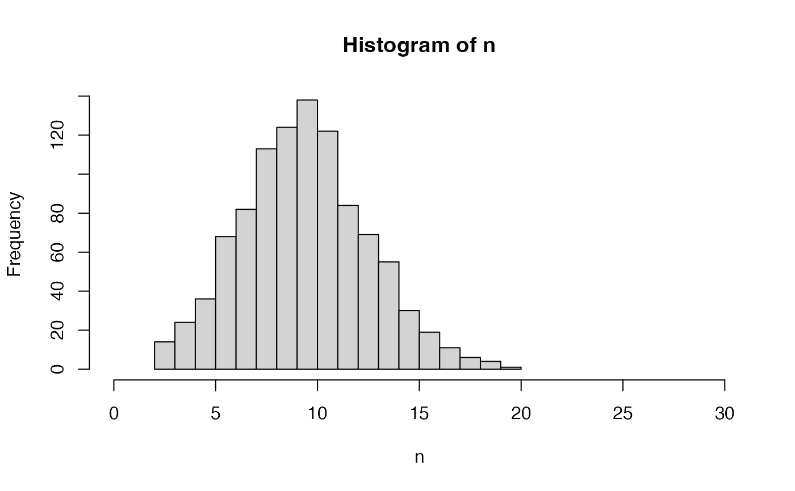
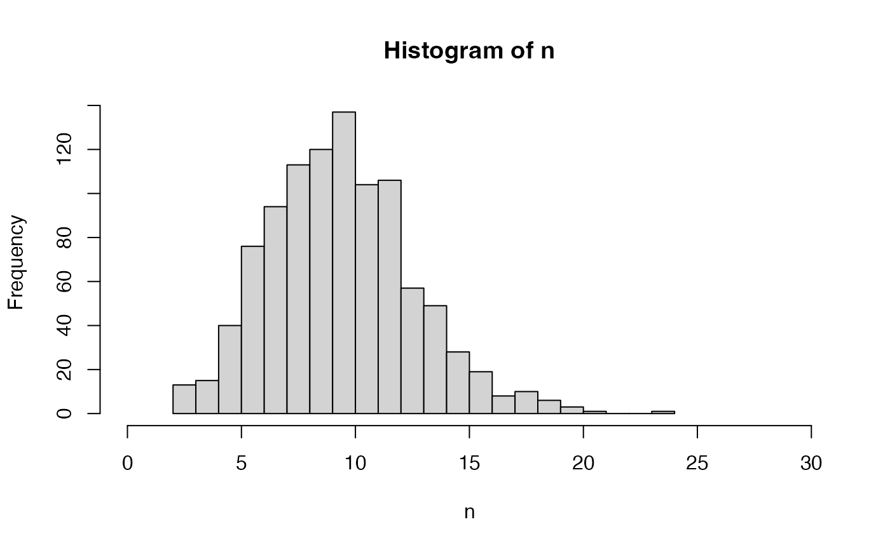

Sample a number of virgin queens - used when
nFathers = NULL (see SimParamBee$nVirginQueens).
This is just an example. You can provide your own functions that satisfy your needs!
nVirginQueensPoisson(colony, n = 1, average = 10)
nVirginQueensTruncPoisson(colony, n = 1, average = 10, lowerLimit = 0)
nVirginQueensColonyPhenotype(
colony,
queenTrait = 1,
workersTrait = 2,
checkProduction = FALSE,
lowerLimit = 0,
...
)integer, number of samples
numeric, average number of virgin queens
numeric, returned numbers will be above this value
numeric (column position) or character (column name), trait
that represents queen's effect on the colony phenotype (defined in
SimParamBee - see examples); if NULL then this effect is 0
numeric (column position) or character (column name), trait
that represents workers's effect on the colony phenotype (defined in
SimParamBee - see examples); if NULL then this effect is 0
logical, does the phenotype depend on the production
status of colony; if yes and production is not TRUE, the result is
above lowerLimit
other arguments of mapCasteToColonyPheno
numeric, number of virgin queens
nVirginQueensPoisson samples from a Poisson distribution,
which can return a value 0 (that would mean a colony will fail to raise a
single virgin queen after the queen swarms or dies).
nVirginQueensTruncPoisson samples from a truncated Poisson
distribution (truncated at zero) to avoid failure.
nVirginQueensColonyPhenotype returns a number (above
lowerLimit) as a function of colony phenotype, say swarming
tendency. Colony phenotype is provided by
mapCasteToColonyPheno. You need to set up traits
influencing the colony phenotype and their parameters (mean and variances)
via SimParamBee (see examples).
nVirginQueensTruncPoisson(): Sample a non-zero number of virgin queens
nVirginQueensColonyPhenotype(): Sample a non-zero number of virgin queens
based on colony's phenotype, say, swarming tendency
SimParamBee field nVirginQueens and
vignette(topic = "QuantitativeGenetics", package = "SIMplyBee")
nVirginQueensPoisson()
#> [1] 13
nVirginQueensPoisson()
#> [1] 11
n <- nVirginQueensPoisson(n = 1000)
hist(n, breaks = seq(from = min(n), to = max(n)), xlim = c(0, 30))

table(n)
#> n
#> 2 3 4 5 6 7 8 9 10 11 12 13 14 15 16 17 18 19 20 21
#> 2 7 15 54 68 102 118 107 94 104 109 75 57 41 23 13 7 1 1 2
nVirginQueensTruncPoisson()
#> [1] 8
nVirginQueensTruncPoisson()
#> [1] 5
n <- nVirginQueensTruncPoisson(n = 1000)
hist(n, breaks = seq(from = min(n), to = max(n)), xlim = c(0, 30))

table(n)
#> n
#> 2 3 4 5 6 7 8 9 10 11 12 13 14 15 16 17 18 19 20 21
#> 1 7 22 44 60 102 127 127 120 114 95 53 47 29 21 18 6 3 2 2
# Example for nVirginQueensColonyPhenotype()
founderGenomes <- quickHaplo(nInd = 3, nChr = 1, segSites = 100)
SP <- SimParamBee$new(founderGenomes)
# Setting trait scale such that mean is 10 split into queen and workers effects
meanP <- c(5, 5 / SP$nWorkers)
# setup variances such that the total phenotype variance will match the mean
varA <- c(3 / 2, 3 / 2 / SP$nWorkers)
corA <- matrix(data = c(
1.0, -0.5,
-0.5, 1.0
), nrow = 2, byrow = TRUE)
varE <- c(7 / 2, 7 / 2 / SP$nWorkers)
varA / (varA + varE)
#> [1] 0.3 0.3
varP <- varA + varE
varP[1] + varP[2] * SP$nWorkers
#> [1] 10
SP$addTraitA(nQtlPerChr = 100, mean = meanP, var = varA, corA = corA)
SP$setVarE(varE = varE)
basePop <- createVirginQueens(founderGenomes)
#> Error in get(x = "SP", envir = .GlobalEnv): object 'SP' not found
drones <- createDrones(x = basePop[1], nInd = 50)
#> Error in get(x = "SP", envir = .GlobalEnv): object 'SP' not found
droneGroups <- pullDroneGroupsFromDCA(drones, n = 2, nDrones = 15)
#> Error in get(x = "SP", envir = .GlobalEnv): object 'SP' not found
colony1 <- createColony(x = basePop[2])
#> Error in get(x = "SP", envir = .GlobalEnv): object 'SP' not found
colony2 <- createColony(x = basePop[3])
#> Error in get(x = "SP", envir = .GlobalEnv): object 'SP' not found
colony1 <- cross(colony1, drones = droneGroups[[1]])
#> Error in get(x = "SP", envir = .GlobalEnv): object 'SP' not found
colony2 <- cross(colony2, drones = droneGroups[[2]])
#> Error in get(x = "SP", envir = .GlobalEnv): object 'SP' not found
colony1 <- buildUp(colony1)
#> Error in get(x = "SP", envir = .GlobalEnv): object 'SP' not found
colony2 <- buildUp(colony2)
#> Error in get(x = "SP", envir = .GlobalEnv): object 'SP' not found
nVirginQueensColonyPhenotype(colony1)
#> Error in get(x = "SP", envir = .GlobalEnv): object 'SP' not found
nVirginQueensColonyPhenotype(colony2)
#> Error in get(x = "SP", envir = .GlobalEnv): object 'SP' not found